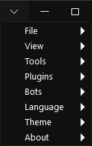
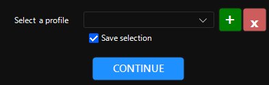
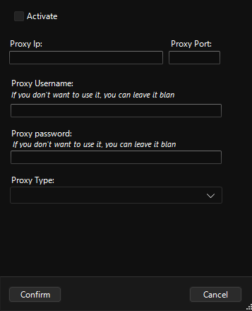
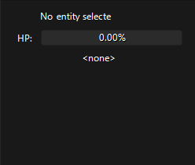
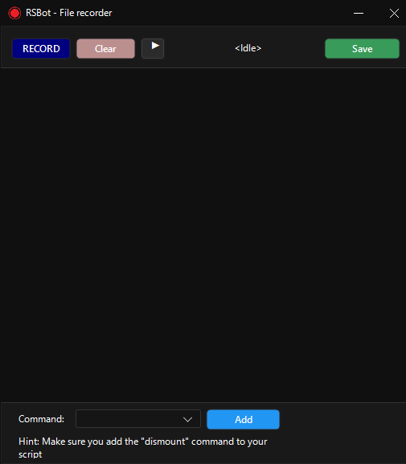
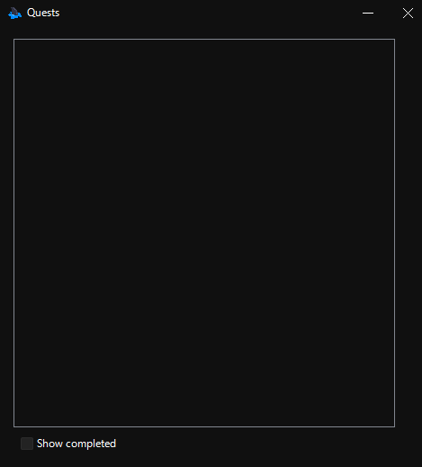
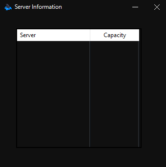

Menu bar
{kind=link}
File
File > Select Profile
{kind=link}
You can delete, add, save selection of profiles with a pop-up. You can alternatively summon the same pop-up
on top right
%profile-name%.
[!TIP] Bot will save configurations for the character you're currently logged in.
Meaning, if you were to login to another character it won’t have the same configuration as the other character.
[!IMPORTANT] If you create a login entry, that entry will only show up on the profile you have selected.
[!WARNING] Profiles will only store data in the general tab, auto-login etc., whereas other settings will be saved per character.
File > Proxy Config
Settings regarding proxy.
{kind=link}
File > Exit
Exits the bot.
View > Sidebar
Shows your pets and targeted entities if you’ve ticked it.
{kind=link}
Tools > Script Recorder
Script recording tool.
{kind=link}
[!TIP] You can cast skills, it’ll be logged into the script.
[!TIP] For teleportation you need NPC’s type and teleportation option’s name. Type can be found in the
Map>Entity listand name is the name of the teleportation without the square brackets e.g.Sigia Drock.
[!TIP] The town scripts use the same format as this. You can edit them if you feel like it.
[!WARNING] Don’t go too far between 2 points. Bot won’t be able to execute the movement to the specified coordinates, causing your script to fail.
[!WARNING] If you’re going to make a script to go to the training area, let the bot execute town script and then start recording to get to the town loop’s last coordinate as a starting point to avoid any collision.
Plugins
Every aspect of the bot is essentially a plugin, you may integrate any 3rd party plugins you may desire on
<RSBOT directory>/Data/Plugins. You can find minor plugins here.
Plugins > Quests
Shows your quests.
{kind=link}
Plugins > Command Center
Allows you to control the bot directly from the client. Available actions are:
- Set the training area
- Cast all buffs
- Show the bot window
- Start the bot
- Set training area and start bot
- Stop the bot
{kind=link}
You can invoke them through the chat or emotes. Defaults are:
| Bot command | Emote action | Chat command |
|---|---|---|
| Set the training area | Rush | Greeting |
\here |
| Cast all buffs | unbound | \buff |
| Show the bot window | Smile |
\show |
| Start the bot | Yes |
\start |
| Set training area and start bot | unbound | \here |
| Stop the bot | No |
\stop |
Plugins > Server Information
Shows information about the server like server name and their capacity.
{kind=link}
Bots
Allows you to choose a bot base to determine what the bot will do while it’s working. There are currently 4 bot bases:
When you select another bot base, the second tab will be replaced with the bot base you’ve selected.
Language
Lets you select your desired language. Currently supported languages are:
- English
- German
- Turkish
- Spanish
- Vietnamase
- Russian
- Arabic
Theme
Lets you determine the color theme of the UI. Dark, Light, Auto or user specified color.
About
Displays links that are connected with the bot.